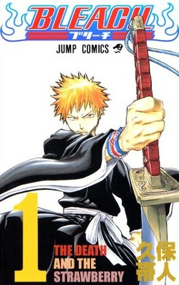

Autor: Tite Kubo
Gênero: Ação, Aventura, Shonen, Sobrenatural, Super Poderes
A história conta com Kurosaki Ichigo como personagem principal. Após uma série de incidentes ele acaba se tornando um Shinigami, que são responsáveis pelo fluxo de almas do mundo real até a Soul Society, assim como combater os espíritos malignos, Hollows. Porém, conforme ele começa a se envolver com o mundo espiritual, ele acaba no meio de uma trama que ameaça a existência de ambos os mundos.